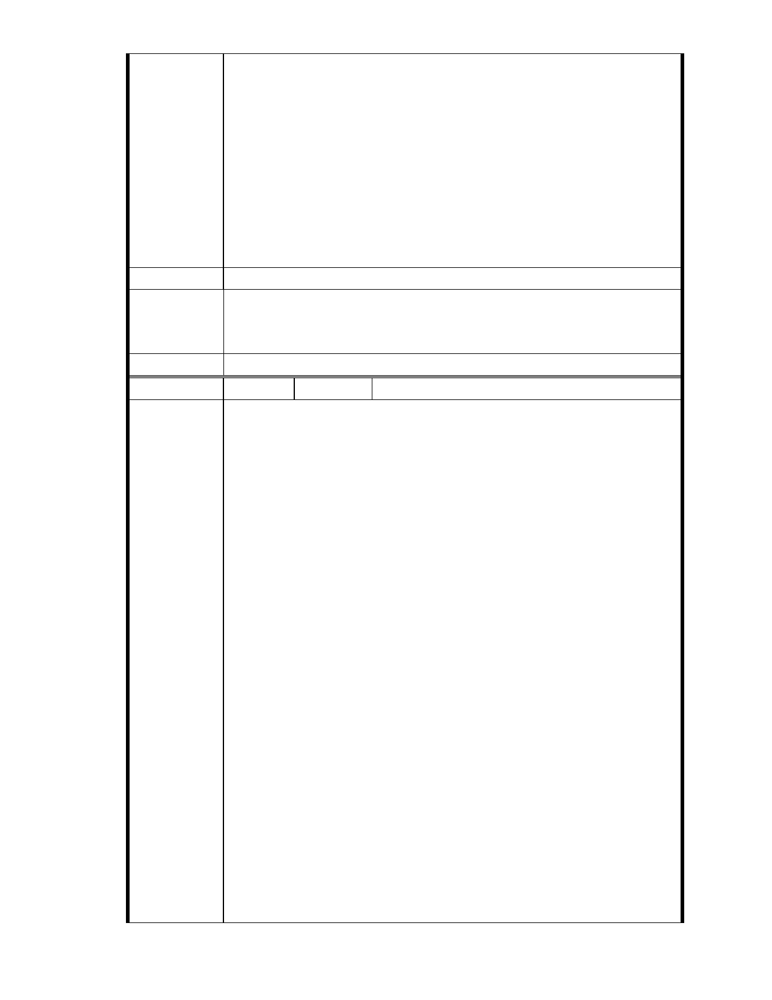

2：「本案未來宜朝主要計畫、細部計畫、開發計畫予以個別審議處
理之方式辦理」之規定，本案主要計畫應與細部計畫、開發計畫應
分開辦理。
依據本案專案小組第四次審查會議結論一：「本案都市計畫變更之審議
應分二階段處理，即主要計畫保護區變更為社會福利特定專用區之適宜
性先經委員會（大會）原則同意後，再續予討論、審查細部計畫之內容。」
及第七次專案小組審查會會議結論三：「本案細部計畫俟主要計畫審議
通過後，再依規定程序審議。」之規定，本案細部計畫應俟主要計畫審
議通過後，再依規定程序審議。
建議辦法
市府說明
委員會決議
一、本案已進入都市計畫法定程序，後續將依都市計畫委員會審定內容
為準。
二、相關陳情意見將納入本案審查人民意見，依法定程序辦理。
同編號 1。
編
號 117
陳情人 陳乃立、李日進（MA201210160036 ）
主旨：
有關「變更臺北市內湖區成功路五段大湖公園北側部分保護區及道路用
地為社會福利特定專用區主要計畫案」，依據都市計畫法第 19 條規定，
於送 貴會審議前，應先辦理公開展覽及舉行說明會，並將日期及地點登
報周知，詳如說明，敬請查照。
說明
一、 依據都市計畫法第 19 條第 1 項規定辦理。
二、 依據都市計畫法第 19 條第 1 項(前段)：「主要計畫擬定後，
送該管政府都市計畫委員會審議前，應於各該直轄市、縣
陳情理由
(市) (局) 政府及鄉、鎮、縣轄市公所公開展覽三十天及舉行說
明會，並應將公開展覽及說明會之日期及地點登報周知。」規
定，本案應於主要計畫擬定後，送 貴委員會審議前，應辦理公
開展覽三十天及舉行說明會，並應將公開展覽及說明會之日期
及地點登報周知。
三、 依據都市計畫法第 19 條第 1 項(後段)：「任何公民或團體得
於公開展覽期間內，以書面載明姓名或名稱及地址，向該管政
府提出意見，由該管政府都市計畫委員會予以參考審議，連同
審議結果及主要計畫一併報請內政部核定之。」規定。本案之
前於民國 94 年擬定主要計畫，至今事隔 7 年有餘，計畫案改變
- 128 -